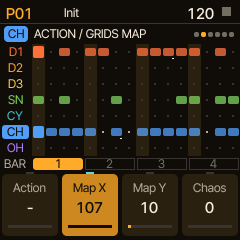
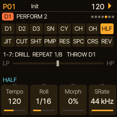
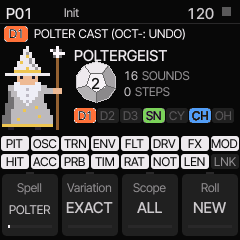
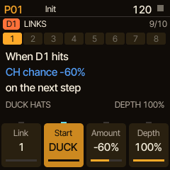
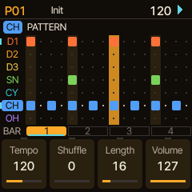
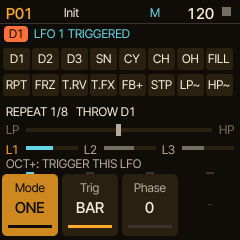
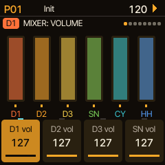
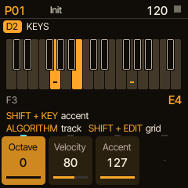

Drum machine firmware for the M-VAVE FM-1
Elixir is free, open-source alternative firmware that ports the Erica Synths LXR-02's six-voice engine, FX bus and sequencer to the FM-1, then adds sends and reverb, a sound browser, sequencing generators and a performance mode made for playing live.
The LXR-02, all of it
Everything that made the LXR-02 a favourite is here, laid out on the FM-1's keys, buttons and four knobs. Kits and projects from an LXR-02 come across over USB.
- Six voices on seven tracksThree drums, snare/clap, cymbal, closed and open hat, each with its oscillator, FM, transient, filter, envelopes and LFO.
- The FX busDrive (tube, fold, rat), ring mod, compressor and delay.
- 32 patterns of 4 barsParameter locks on any step, flams, shifts, rolls and probability.
- Kits, morph and songs64 kits per project, morphing between two kits, songs that chain patterns.
- MIDI in and outUSB and TRS in, USB out; clock sync both ways; the LXR's CC and NRPN map.
- The LXR-02's kitsIts 85 factory kits built in, with Erica Synths' permission, plus Hrtl's DLC and UNTZ packs to add. Import your own .SND kits or a whole LXR-02 project folder (kits, patterns and songs) from the library page.
Checked against the original. The FM-1 has no floating-point unit, so the LXR's DSP is rewritten in fixed point. A test renders every voice with both engines: levels match to within 0.1 dB, and the tonal voices correlate at 0.99–1.00.
What Elixir adds
New sound, sequencing and performance features, all of them saved with your kits and projects, and most of them lockable per step.

Sequencing generators
Every track can have a generator, playing a live copy you can commit, undo or reset:
- Euclid, with a second pulse joined by OR, XOR, AND or SUB
- Mutate, a Turing machine, and cellular automata
- Emilie Gillet's Grids drum map
Each track also has its own length, clock (from /4 to x4) and direction: forward, reverse, ping-pong, random or a random walk. Add step conditions and ratchets that bounce like a dropped ball, and a pattern turns into polyrhythms.

Made for playing live
PERF turns the sixteen white keys into performance controls. Hold for rolls, fills, beat repeat, delay freeze, reverb and FX throws, tape stop and filter sweeps; a second bank adds drill, half time, cuts, pump, comb, crush and reverse. A DJ filter, four macros and a mixer sit on the knobs.

Spells
Pick tracks with the black keys and what may change with the white keys, pick one of ten spells and press COPY (OCT+): a twelve-sided die rolls and the spell rewrites the sound and the steps in its own direction. Poltergeist makes metallic rattles, Skeleton strips a groove to its bones, Haunted Dub darkens and echoes, Glass Cathedral tunes everything to one key. Roll again, take it back exactly with SHIFT (OCT−), or keep it and save it as a recipe.

Tracks that react to each other
Links read like a sentence: when D1 hits, CH chance −60%, on the next step. The kick ducks the hats, the open hat answers only when the closed hat rests, a snare hit makes the next hat rattle. Up to eight links per pattern turn a loop into a small system.
Sends and reverb
An FX-bus send and a reverb send on every voice. Room, spring, hall and plate reverb after the FX bus, plus a phaser, a flanger and a tape delay on the bus.
Sound shaping
Five waveshapers, a bit reducer and tilt EQ per voice; random-per-hit pitch, decay, filter and pan; choke groups; duck, filter or ring modulation from another voice.
Global LFOs
Three tempo-synced LFOs, up to 256 bars long, on morph, the DJ filter, the effects, density, transpose or the melodies. A one-shot saw over 64 bars turns one kit into another while you play.
Play it as an instrument
KEYS plays any voice chromatically and records into the steps. Control All moves a parameter on every track at once, as on Elektron boxes.
Sound browser
Browse presets for a single track: every kick, snare or hat from your kits and the kit library, gathered in one list, each heard on the track as you go. Keep one and the rest of the kit stays as it is. Plus a library of 128 kits and 128 sounds beyond the project.
Back up over USB
The library page backs up and restores projects and the kit library, and brings in LXR-02 kits and projects. No drivers, just the browser.
Controller map
A ready-made map for eight-column controllers such as Novation's Launch Control XL: mixer, sound and performance controls, with feedback.
Try it first
The emulator runs the firmware's own C code in your browser, with Web MIDI in and out. What you hear there is what the FM-1 plays.
Rings and Plaits models
The three drum voices can ring through a fixed-point port of Mutable Instruments Rings or play Plaits' sixteen original engines, two at a time, on the FM-1's second core. Not in the LXR-02. Experimental.
On the FM-1's screen




Get started
You need an M-VAVE FM-1, a USB data cable, and Chrome or Edge on a computer.
Try it
Play Elixir in the browser with your computer keyboard, the mouse or a MIDI controller. Nothing to install.
Open the emulatorInstall it
The install page checks your FM-1, puts the official V15 firmware on first if needed, then installs Elixir. The way back to V15 is on the same page.
Install ElixirLearn it
The manual starts with a beat in two minutes, then covers every page, button and knob.
Read the manualThis is a test release with little testing on real FM-1s so far. Read the notes on the install page before you install; there is no warranty.
Updates
What each release added and fixed.
0.1931 October 2026
New
- SPELLS (ARP, after PERFORM): NONE and eleven guided randomizers for the sound and the pattern, from Poltergeist to Whispering Motes. The black keys pick the tracks, the white keys what may change (1–8 the sound, 9–16 the pattern). COPY (OCT+) rolls a twelve-sided die and casts, again rerolls from before the cast, and SHIFT (OCT−) takes it back exactly. Five pages: GRIMOIRE (spell, variation, scope, roll), CAST (sound, pattern, density, chaos), CHARACTER (each spell's own four), LIMITS (the most a spell sets for the sends, the reverb and the FX mix) and MOTION (how far the tracks' speed and direction part, from SAME to FREE, and the lengths a cast may give). Bar key 3 saves a recipe (U1–U8) into the project. D1 always stays a kick and D2 and D3 toms, and spells often give the toms a melody in the pattern's scale.
- The LXR-02's 85 factory kits are built in, with Erica Synths' permission. The kit browser (PRESETS) lists them first (F1 …), then the library, then the slots; CONFIG → BUTTONS & KITS can put the slots first. The sound browser offers the factory kits' voices too.
- Hrtl's DLC and UNTZ kit packs (16 kits each): tick them on the install page or add them on the library page. They go into the library's first empty slots, never over your own kits. The emulators include them.
- Songs: KNOB 3 (Repeats) plays a row's pattern x1, x2, x3, x4, x6, x8 or x16 times before moving on; the row playing shows which time it is.
- Pictures: each EDIT page's top shows its sound (the wave, FM, transient, envelopes, the filter's response, the shaper, inserts, LFOs, random lanes); the MODEL page a picture of the model beside a plain description; SEQ's groove, bounce, melody and scale; FX's reverb room, delay echoes, FX bus, DIRT and the master compressor.
- PERF RESET: SHIFT (OCT−) + HOME turns every performance effect off at once.
- KEYS stays on as you change pages, so you can play while turning knobs; the header shows KEYS.
- The FX pages end with the voices' FX and reverb sends.
- Editing with morph on moves the morph target too, so an edit is heard at any morph amount (CONFIG → MORPH → Edits; KIT ONLY for the LXR's way).
- DENSITY's VARY redraws the order steps drop and ghosts land each time round; OCT+ on DENSITY commits it into the pattern (again: undo).
Changed
- The sound pages run in a synth's order: MODEL, oscillator, FM, transient, filter, shape, insert FX, the envelopes, then the modulation. SELECT steps through them all; EDIT, ENV, SCL and LFO jump to their sections. A section of several pages shows its page in the title.
- SEQ opens the track's pages (TRACK, generator, action, groove, bounce, melody, scale), SEQ again step edit. ARP cycles PERFORM → SPELLS → GLOBAL MOD (the global LFOs, macros and links).
- LFO 1 and LFO 2 share a layout. The track's MIX pages are gone (the mixer, CONFIG and TRACK have them); the sample rate is on SHAPE. CONFIG has a new last page, ELIXIR: the version and each core's load.
- Knob cards in real units: filter Hz and Q, envelope times in ms, LFO rates in Hz, delay time in ms and so on.
- On a model's own sound, the FM, TRANSIENT and AMP EG pages it doesn't use are hidden, and OSC keeps only COARSE and FINE live.
- The FX bus is always stereo (no Output knob).
- Phone emulator: a smaller screen with PRESET, ALGO and SELECT beside it, larger knobs under the parameters they turn (or drag a parameter on the screen), square pads and a volume slider. Both emulators draw the screen smooth at your display's resolution.
- A new unit no longer fills its kit slots with factory kits (LOAD → FACTORY, ALL > SLOTS still does).
Fixed
- After a model change the knob cards kept the last model's names and values.
- MODEL on LXR showed Rings' knobs, which do nothing there; the MODEL page lit GLO instead of EDIT.
- Phone emulator: tapping buttons no longer zooms the page.
0.1830 October 2026
New
- P CHORD shows its chord by name (OCT, 5, sus4, m, m7, m9, m11, 69, M9, M7, M) on its first MODEL knob, now called Chord; Timbre and Morph are named Invert and Wave.
- TRK LFO 2 (LFO, after LFO MODE; from 0.19 LFO 2): a second LFO on every track, with LFO 1's waves, sync, retrigger, offset and modes, on any of the track's own parameters. On the same target as LFO 1 it adds to it.
- INSERT (SCL, after SHAPE): an effect on every track before its pan and sends: PHASER, FLANGER, CHORUS, TREMOLO, AUTOPAN, SHIFTER (a frequency shifter with feedback) or RING, with an AMOUNT and two knobs named for the type.
- The LFO's and velocity's targets go on past the LXR's to Elixir's own: the sends, tilt, bits, the random amounts, cross mod, the MODEL knobs, and the reverb, delay and dirt settings.
- GROOVE (ARP, after SCALE): twelve timing and velocity templates per pattern (MPC-style swings, LAZY, DILLA, 2-STEP, DUB, PUSH, TECHNO, BROKEN) with an amount, HUMANIZE, and which tracks follow.
- Seven more filter types on every track: LP4 (a ladder low-pass), COMB+ and COMB− (tuned combs that follow the note), ALLPASS (a phaser's notches), VOWEL (formants from A to U), DUB BP (a driven band-pass) and CHORD (a root, fifth and octave rung out of any sound).
Changed
- The 64 kit slots are stored more compactly in memory, which frees about 6 KB for the next features (more LFOs, track inserts). Kits, projects and the library are unchanged, and kits sound the same.
0.1728 October 2026
New
- MICRO: ten microsound voices for any track, after GLITCH: CLICK, TRAIN, CRUNCH, BITS, BURST, SNAP, GRAIN, DUST, POP and CHIRP, each with Length, Colour, Jitter, Reverse and Tension (the track's MODEL page).
Fixed
- Holding SHIFT (OCT−) and COPY (OCT+) together for a few seconds (to clear a selection, say) sent the FM-1 to its UBOOT mode, which looked as if it had switched off. UBOOT now needs both keys held from power-on.
- Step edits (chance, velocity, note, condition, timing, ratchets, locks) on a track that a generator plays did nothing after COMMIT; they now reach what plays.
0.1628 October 2026
New
- A scale per pattern (17, from major and minor to pentatonics, Hirajoshi and pelog) that the tracks you choose follow: their notes, random pitch, KEYS and MIDI in stay in key.
- Note lengths per step (1/32 to 1/2, and TIE) with a GATE per voice; MIDI out sends real note-offs.
- A melody generator after Marbles: random, walk, arpeggios and motifs over the scale, with spread, bias, steps and déjà vu loops, beside any rhythm generator. COMMIT writes the notes in.
- DENSITY on PERF: one knob thins the whole pattern, weakest steps first, or builds it up with chances, ghost notes and ratchets. Any tracks can be left out.
- A third global LFO, and new destinations: density, transpose, the melody, the delay, the reverb sends and the macros.
- A tape delay: TAPE and TAPE PP with wow, saturation and feedback past 100%, note-value sync, glitches (stutter, reverse, skip, half speed), pitch-shifted repeats, and the echoes into the reverb (THROW REV throws them too).
- PLATE, Mutable Instruments Clouds' reverb, as a fourth reverb model.
- Dirt: four more shapes per voice (FUZZ, TAPE, SINE FOLD, BITE), a drive before the FX bus, and a master DIRT (tape, tube, fuzz, diode, fold).
- HYRULE, a colour theme: deep forest green, parchment text, Triforce gold values and a blue for what's active (CONFIG → DEVICE → Colours).
- DENSITY on the remote: its amount on a knob, and a row of buttons to leave tracks out of it (or put them all back).
- A master compressor (FX → MASTER COMP): threshold, ratio, attack, release, makeup and mix, with a sidechain from the mix or any one track. Sidechained to the kick, it ducks everything else and leaves the kick's own punch alone.
- STUTTER (PERF → PERFORM: STUTTER): the master cut into slices and repeated in time, from 1/8 to 1/64, with shrinking rolls, pitch drops and rises, and reversed repeats. A chance per beat, OCT+ held, or a global LFO sets it off.
Changed
- The reverb and the delay's echoes now run while the first core waits for the second, so the effects cost less at the busiest moments.
- ARP's generator pages: MELODY comes after ACTION and SCALE after TRACK. PERF has a DENSITY page after MORE, and two pages for LFO 3. The FX bus has three more pages (DELAY: DUB, DELAY: SEND, DIRT).
- CONFIG → LOAD shows how deep the stacks have gone.
- The FX pages come in order: REVERB first, then the FX bus and the selected effect's pages together (the two DELAY pages only when the bus is a DELAY), then DIRT.
- The remote map is on two channels: TRACKS (15 by default) for each track's knobs, mutes and solos, and GLOBAL (16) for the performance, the effects and the rest. No number is used twice on a channel, so mute and solo no longer share a CC with a knob. Buttons work as CCs or notes, and their lights answer the way they were sent. Settings from 0.15 move to the new defaults. The new map is in the manual (§15).
- With the delay's SYNC on, each detent of TIME moves to the next note value.
Fixed
- The site said two global LFOs; there are three.
0.1527 October 2026
New
- Plaits' sixteen original engines (virtual analog, waveshaping, FM, grain, additive, wavetable, chords, speech, swarm, noise, particles, string, modal, bass drum, snare, hi-hat) as models on D1–D3, with Harmonic, Timbre, Morph, Colour (a low-pass gate), Aux and Env. Experimental, as the Rings models are.
- The FM-1's second core renders the three drum voices. The LXR-02's kits use about 27% of the first core, down from about 45%. A unit whose second core misbehaves falls back to one core on its own.
- Up to two models play at once (one on a unit running one core); a third plays as the LXR voice and its MODEL page says so.
- CONFIG → LOAD: the load by part (voices, mixer, FX bus, reverb, sequencer) and the state of both cores.
Fixed
- Morphing, or a global LFO on morph, no longer overloads the processor: the kit now changes over a few blocks instead of all at once.
- The second core no longer switches off the first time the SPEECH engine plays.
- The LOAD page could show impossible numbers (over 1000%) while morphing.
0.14.126 October 2026
Changed
- LFO MODE comes right after the LFO's two pages instead of last among the sound pages.
0.1426 October 2026
New
- The first release as Elixir: a new title screen and this site, with the install steps on their own page, the manual as a page and the emulator.
- The install and library pages check what your FM-1 runs before they write anything.